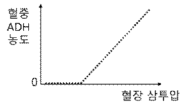

문제 1
항이뇨 호르몬(ADH)은 뇌하수체 후엽에서 분비된 후 콩팥에 작용하여 수분의 재흡수를 촉진한다. 아래 그림은 정상 생쥐에서 혈장 삼투압의 변화에 따른 혈중 ADH 농도를 나타낸 것이다.

(1) 위 그림을 보고 정상 생쥐에서 혈장 삼투압의 변화가 ADH 분비에 미치는 영향을 설명하시오. [1점]
카이스트 대학원생 넙죽이는 돌연변이 생쥐 A와 B에 대한 연구를 수행 중이다. 돌연변이 생쥐 A는 ADH가 콩팥에서 정상적으로 작용하지 못한다. 돌연변이 생쥐 B는 뇌하수체의 ADH 분비에 이상이 있다. 넙죽이는 6시간 간격으로 생쥐 A, 생쥐 B, 정상 생쥐의 혈장 삼투압을 측정하여 아래 그림과 같은 결과를 얻었다.

(2) 생쥐 A의 혈중 ADH 농도는 정상 생쥐와 비교하여 어떤지 답하고 혈장 삼투압이 계속 높게 유지되는 이유를 설명하시오. [1점]
(3) 생쥐 B의 혈액을 채취하여 정상 생쥐에 주입하였다. 이 정상 생쥐의 혈장 삼투압이 시간의 경과에 따라 어떻게 변화할지 예측하고 이유를 설명하시오. [3점]